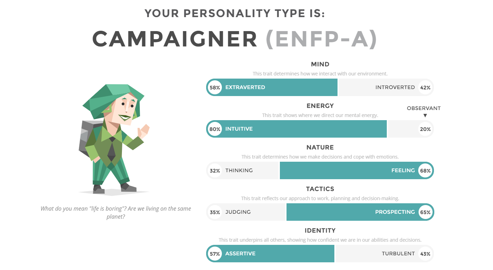

UX Designer | Front-End Developer | User Researcher | Branding | Marketing | Bathroom Singer | Professional Cake Tester | Day-Dreamer | Beyoncé Pretender | Artist | Candy Crusher |
Given the fact that my portfolio was all business, let me tell you about myself. I am a serious board game addict, you can lure me into a game of Catan at any point during the day and I probably wouldn't say no. I love meeting strangers and talking to them about anything, seriously I once wove a conversation about weather with leadership qualities and cupcakes. Yes, I am that person.
I do use my imagination quite a bit, so I love with working crazy, out of the box thinking and ideas. That is the great thing about working in a UX team, the crazy ideas at least get to the table before reserving them for another day. I like redefining and revamping age old techniques and experimenting with its outcomes. Creative challenges and problem solving excites me and I tend to pay my undivided attention to them. Staring intensely into the screen until it makes sense has become a part of my personality.
Speaking of my personality, I took a personality test, on 16personalities.com not too long ago:

I would pretty much agree with most of the things listed on that picture. I tend to look at positive side of things, even when things look murky. Another quality about myself that I am very proud of is 'loyality'. I am loyal to the work I do and I want it to be the best version of what I can produce.
I started creating GUIs as a Electrical Engineer during my undergraduate degree and realized I have a real passion and aptitude for creating interfaces and I chose to do my Master's in Human Computer Interaction. I also happen to dabble in art (sighes in arteest). I draw, paint and illustrate graphics whenever I find the time to do so.
Let's talk, reach out to me!